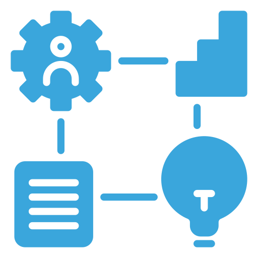

 Competências Técnicas
As competências abaixo estão organizadas por domínio técnico.
Ao expandir cada categoria, são apresentados os principais métodos, ferramentas, tecnologias e aplicações práticas relacionadas.
Ao expandir cada categoria, são apresentados os principais métodos, ferramentas, tecnologias e aplicações práticas relacionadas.
Análise de Dados
Fundamentos, métodos e ferramentas para transformar dados brutos em informações valiosas e insights aplicáveis.
Microsoft Power BI
Modelagem de dados, ETL com Power Query, medidas DAX, modelagem dimensional, criação de dashboards corporativos, integração com bancos de dados, governança de workspaces, otimização de desempenho e técnicas profissionais de Data Storytelling.
Microsoft Excel
Tabelas dinâmicas, funções avançadas, análise de dados, automação de rotinas, criação de relatórios, organização de bases e preparação de dados para BI.
Python Programming Language
Manipulação de dados com Pandas, cálculos numéricos com NumPy, automação de processos, web scraping, análise estatística, modelos preditivos e fundamentos de machine learning.
R Programming Language
Manipulação de dados, visualização estatística, análise exploratória, criação de modelos estatísticos e aplicações em machine learning com RStudio.
Data Analysis Expressions (DAX)
Medidas e colunas calculadas, funções de filtragem e contexto, cálculos avançados, otimização e utilização do DAX Studio em análises de desempenho.
Power Query
Limpeza, transformação e padronização de dados, automação de etapas ETL, criação de consultas parametrizadas e integração entre múltiplas fontes.
Tableau
Construção de dashboards interativos, análise visual, conexão com diversas fontes de dados e criação de histórias visuais orientadas a insights.
Qlik Sense
Preparação de dados, desenvolvimento de visuais dinâmicos, criação de dashboards gerenciais e uso do motor associativo para exploração analítica.
Google Looker Studio
Conexão com múltiplas fontes, criação de relatórios dinâmicos, métricas personalizadas e visualizações para monitoramento de indicadores.
Google Data Studio
Desenvolvimento de painéis, aplicação de filtros interativos, consolidação de dados e construção de relatórios executivos.
Google Analytics
Monitoramento de métricas digitais, análise de tráfego, interpretação de KPIs e avaliação de comportamento de usuários.
Apache Spark
Processamento distribuído, manipulação de grandes volumes de dados, pipelines analíticos e fundamentos de aplicações big data.
Apache Hadoop
Estrutura distribuída, HDFS, conceitos de processamento massivo e fundamentos de ecossistemas big data.
SQL for Data Analysis
Consultas analíticas, manipulação de dados, filtros avançados, junções, agregações, subconsultas e modelagem relacional.
Data Warehouse
Arquitetura de dados, conceitos de ETL, esquemas estrela e floco de neve, KPIs e construção de ambientes analíticos.
Data Modeling and Dimensional Modeling
Estruturas relacionais, normalização, criação de entidades e relacionamentos, modelagem dimensional e construção de modelos para BI.
Data Science Foundations
Estatística aplicada, exploração de dados, limpeza de bases, visualização analítica, lógica de experimentação e fundamentos de IA.
Machine Learning Basics
Treinamento e avaliação de modelos, algoritmos clássicos, preparação de dados, validação e uso de pacotes para modelagem preditiva.
Exploratory Data Analysis (EDA)
Identificação de padrões, tratamento de outliers, visualizações diagnósticas, consolidação de insights e suporte à tomada de decisões.
Statistics for Data Analysis
Probabilidade, distribuições, testes estatísticos, medidas descritivas, variabilidade e inferência aplicada a dados.
Business Intelligence
KPIs, métricas empresariais, processos decisórios, governança de dados, análises corporativas e implementação de soluções gerenciais.
Data Storytelling and Visualization Techniques
Construção narrativa, design de dashboards, comunicação de insights, usabilidade, percepção visual e técnicas avançadas de apresentação de dados.
Banco de Dados
Estruturas, linguagens e técnicas voltadas ao armazenamento, organização e consulta eficiente de grandes volumes de dados.
Modelagem e Arquitetura de Banco de Dados
Modelagem de dados conceitual, lógica e física; normalização; diagramação; integridade referencial;
entendimento de arquitetura relacional e não relacional; definição de chaves, relacionamentos e regras de negócio;
implementação de estruturas de armazenamento otimizadas.
SQL
Criação e manipulação de bancos relacionais; consultas avançadas com SELECT, JOINs, GROUP BY e HAVING;
subconsultas; funções de agregação; manipulação de dados com DML (INSERT, UPDATE, DELETE);
administração básica com DDL e controle de acesso via DCL; criação de views, índices e stored procedures.
MySQL
Gestão de bancos MySQL; criação e otimização de tabelas e índices; uso de triggers, procedures e functions;
administração de usuários; tuning de performance; utilização em aplicações web; integração com PHP;
exportação e importação de dados; implementação de rotinas de manutenção.
SQL Server
Administração de instâncias SQL Server; criação de bancos, tabelas, funções e procedures;
gerenciamento de acessos; tuning de queries; jobs de automação; controle de transações e locks;
utilização de SQL Server Management Studio e ferramentas de análise.
Oracle Database / PL/SQL
Desenvolvimento PL/SQL com procedures, functions, packages e triggers; uso de cursores;
execução de blocos anônimos; gerenciamento de usuários e permissões;
criação e administração de estruturas Oracle; gerenciamento de transações e tuning.
PostgreSQL
Administração e utilização de PostgreSQL; criação de tipos, sequences, views e índices;
escrita de queries avançadas; otimização de planos de execução;
uso de extensões; gerenciamento de permissões e manutenção do servidor.
MongoDB (NoSQL)
Estruturação de coleções e documentos; criação de consultas em JSON;
utilização de operadores e pipelines de agregação; modelagem orientada a documentos;
indexação para desempenho; manipulação de dados em bancos não relacionais;
integração com aplicações modernas.
Firebird
Utilização de bancos Firebird; criação e manipulação de tabelas;
escrita de queries SQL; uso de triggers e procedures;
administração básica e manutenção de arquivos de banco.
Administração de Banco de Dados (DBA)
Gerenciamento de instâncias, usuários e permissões; monitoramento de desempenho;
manutenção preventiva; criação e execução de rotinas de backup e recuperação;
tuning de queries e otimização de índices; controle de transações e concorrência;
garantia de integridade, disponibilidade e segurança dos dados.
Big Data
Tecnologias e estratégias para processar, analisar e extrair valor de dados massivos, variados e em alta velocidade.
Fundamentos de Big Data
Conceitos essenciais de Big Data; arquitetura distribuída; sistemas escaláveis;
processamento em larga escala; volume, variedade, velocidade e veracidade (4Vs);
escolha de tecnologias conforme o tipo de dado; fundamentos de análise e pipelines distribuídos.
Engenharia de Dados
Construção de pipelines de dados; ingestão, transformação e entrega;
ETL e ELT; orquestração de fluxos; modelagem para análises avançadas;
integração entre sistemas distribuídos; automação de cargas;
monitoramento e governança; apoio à tomada de decisão baseada em dados.
Google BigQuery
Consulta e análise em data warehouse totalmente gerenciado;
execução de SQL altamente otimizado; particionamento e clusterização de tabelas;
integração com pipelines ETL/ELT; carregamento e exportação de dados em larga escala;
uso de funções analíticas; otimização de custos e desempenho.
Databricks
Uso da plataforma unificada de dados e IA; criação de notebooks colaborativos;
desenvolvimento de pipelines com Delta Lake; processamento batch e streaming;
integração com Spark; gerenciamento de clusters;
otimização de workloads e tuning de performance.
Apache Spark
Processamento distribuído de dados com Spark Core;
criação de aplicações com DataFrames e RDDs;
utilização de Spark SQL; execução de pipelines de larga escala;
desenvolvimento de aplicações completas com Python;
monitoramento e otimização de jobs;
stream processing com Spark Structured Streaming;
tratamento de grandes volumes de dados em tempo real.
Mineração de Dados
Técnicas de descoberta de padrões; identificação de correlações, clusters e tendências;
seleção de atributos; pré-processamento de grandes volumes de dados;
aplicação de métodos estatísticos e machine learning para apoio à decisão.
Inteligência Artificial
Conceitos e aplicações que permitem criar sistemas capazes de aprender, identificar padrões e tomar decisões inteligentes.
Fundamentos de Inteligência Artificial
Conceitos essenciais de IA, sistemas inteligentes, arquiteturas cognitivas,
aplicações práticas, ética, responsabilidade, avaliação de modelos e impactos tecnológicos.
Automação com Inteligência Artificial
Automação de tarefas com IA e APIs; construção de fluxos inteligentes;
integração entre modelos generativos e ferramentas de produtividade;
criação de agentes e automações para negócios e processos operacionais.
Modelos Generativos e IA Generativa
Uso de modelos generativos multimodais; criação de conteúdos com LLMs;
engenharia de prompt; ajuste fino; RAG; avaliação de modelos generativos;
aplicações práticas em texto, imagem, embeddings e agentes inteligentes.
ChatGPT
Criação de fluxos avançados com LLMs; construção de assistentes personalizados;
uso de modelos GPT para automação, análise de dados, geração de conteúdo e agentes de IA;
técnicas avançadas de prompting e otimização de respostas.
Google Gemini
Utilização de modelos multimodais Gemini; criação de fluxos integrados;
análise de imagens, textos e dados; aplicações práticas em automação e produtividade.
Amazon Bedrock
Uso de modelos generativos AWS; seleção e customização de modelos;
criação de agentes autônomos; desenvolvimento com PartyRock;
integração de IA generativa em aplicações corporativas.
Microsoft Copilot
Automação e suporte inteligente com Copilot; interação em ambientes Microsoft 365;
geração de conteúdo e otimização de processos por meio de IA integrada.
Chatbots Inteligentes
Criação de chatbots com IA; fluxos conversacionais;
integração de LLMs; construção de bots baseados em contexto;
automação de atendimento e agentes interativos.
Microsoft Azure Machine Learning
Desenvolvimento e gestão de modelos em ambientes Azure;
pipelines de machine learning; tracking com MLFlow;
experimentação, tuning de hiperparâmetros;
implantação em endpoints; engenharia de prompt aplicada a soluções corporativas;
governança, monitoramento e versionamento de modelos.
Machine Learning
Pré-processamento; seleção de atributos; desenvolvimento, avaliação
e implantação de modelos; MLOps; machine learning em escala;
workflows automatizados; modelos supervisionados e não supervisionados.
Processamento de Linguagem Natural (NLP)
Técnicas de análise de texto; classificação, sumarização e extração de entidades;
modelos de linguagem; embeddings; aplicações com NLP moderno e LLMs.
Inteligência Artificial com Linguagem R
Implementação de algoritmos evolutivos, técnicas estatísticas
e modelos computacionais utilizando a linguagem R.
Zurubabel
Ferramentas visuais e fluxos simplificados de automação de IA;
criação de modelos sem código; integração com pipelines inteligentes.
Soluções Tecnológicas Emergentes
Análise de tendências em IA; tecnologias exponenciais;
adoção estratégica de soluções emergentes; impacto na transformação digital.
IA para Negócios
Aplicações de IA em ambientes corporativos; otimização de processos;
análise estratégica; suporte à tomada de decisão com IA; automação executiva.
AWS SageMaker Canvas
Criação de modelos sem código; análises preditivas; workflows simplificados de ML;
integração com AWS; construção de soluções generativas e preditivas em ambiente visual.
Data Storytelling
A arte de comunicar dados com clareza, contexto e narrativa, conectando informações a decisões e ações.
Microsoft PowerPoint
Estruturação de apresentações profissionais, design visual, animações, técnicas avançadas de narrativa visual e construção de slides de alto impacto para Data Storytelling.
Data Storytelling
Construção de narrativas baseadas em dados, organização lógica de insights, princípios de comunicação visual, criação de mensagens claras e uso estratégico de elementos gráficos para tomada de decisão.
Cloud
Serviços, modelos e arquiteturas que permitem computação escalável, segura e sob demanda na nuvem.
Docker
Construção de imagens, execução de contêineres, isolamento de serviços, criação de ambientes reprodutíveis e suporte a pipelines de desenvolvimento.
Kubernetes
Orquestração de contêineres, implantação declarativa, escalabilidade automática, gestão de clusters e operação de workloads distribuídos.
Microsoft Azure
Serviços de computação, armazenamento e redes, Azure Functions, APIs, mensageria, identidades, Cosmos DB, Application Insights, monitoramento, governança, automação, soluções serverless, integrações com contêineres e arquiteturas baseadas em eventos e mensagens.
Amazon Web Services (AWS)
Serviços gerenciados, computação elástica, redes, segurança, práticas de administração, integrações cloud-native e suporte corporativo a workloads Databricks.
Google Cloud Platform (GCP)
Computação, armazenamento, networking, segurança, automação, integrações com Databricks e arquiteturas escaláveis para soluções corporativas em nuvem.
Microsoft SharePoint
Criação de intranets, gestão de conteúdo, colaboração corporativa, configuração de sites e automação de processos internos.
Cloud Fundamentals, Administration and Solution Architecture
Conceitos de computação em nuvem, modelos de serviço, segurança, governança, administração multi-cloud, desenho de soluções e boas práticas arquiteturais.
Databricks
Arquitetura Lakehouse, Delta Lake, Unity Catalog, ingestão e engenharia de dados, SQL Analytics, BI, Data Warehousing, Machine Learning, IA Generativa, pipelines com DLT e Lakeflow, automação de workloads, performance tuning, governança, segurança, administração de workspaces e identidades, CI/CD, asset bundles, orquestração e operação corporativa completa da plataforma.
Genie Rooms
Configuração de ambientes colaborativos, gerenciamento de salas virtuais e aplicação de práticas recomendadas para coordenação de equipes.
Sistema Operacional
Bases que sustentam o funcionamento de computadores e servidores, gerenciando recursos e garantindo estabilidade.
Linux
Fundamentos do sistema operacional, comandos essenciais, gerenciamento de usuários, permissões, processos, serviços, estrutura de diretórios e práticas básicas de administração.
Android
Conceitos de ambiente móvel, ferramentas do sistema, integrações, configurações e fundamentos de operação e manutenção do ecossistema Android.
Microsoft Windows Server
Instalação e configuração do servidor, administração de recursos, Active Directory, gerenciamento de domínios, permissões, serviços e práticas essenciais de infraestrutura Microsoft.
Virtual Machines
Conceitos de virtualização, criação e gerenciamento de máquinas virtuais, instalação de sistemas operacionais e administração de ambientes isolados.
Segurança da Informação
Práticas e estruturas para proteger dados, sistemas e usuários contra ameaças, falhas e vulnerabilidades.
Information Security
Princípios de segurança, controle de acesso, políticas de proteção, gestão de riscos, fundamentos de segurança organizacional e boas práticas de defesa.
Cybersecurity
Conceitos essenciais de cibersegurança, vetores de ataque, defesa de sistemas, análise de ameaças, monitoramento de ambientes e mitigação de vulnerabilidades.
Network Security
Proteção de redes, segmentação, firewalls, protocolos seguros, prevenção a intrusões e práticas de fortalecimento de infraestrutura.
Blockchain Technology
Estruturas distribuídas, consenso, criptografia aplicada, contratos inteligentes, operações em cadeias públicas e privadas e fundamentos avançados de segurança em blockchain.
Applied Cryptography
Lógica e teoria dos números, cifras simétricas e assimétricas, funções hash, assinaturas digitais e fundamentos matemáticos de sistemas criptográficos.
Programação
Linguagens, algoritmos e técnicas utilizadas para desenvolver soluções tecnológicas e automatizar processos.
Programming Logic
Estruturas condicionais, repetição, modularização, depuração, resolução de problemas e fundamentos essenciais para construção de algoritmos e sistemas funcionais.
Python Programming Language
Sintaxe fundamental, estruturas de dados, funções, módulos, orientação a objetos, manipulação de arquivos, programação assíncrona, integração com APIs RESTful, padrões profissionais, testes, versionamento, uso de SQL com DB API e SQLAlchemy, além de boas práticas para desenvolvimento de aplicações completas.
FastAPI Framework
Construção de APIs RESTful assíncronas, validação, autenticação, autorização, modelagem de rotas, integração com bancos relacionais, testes, deploy e otimização de desempenho.
JavaScript Programming Language
Manipulação do DOM, eventos, lógica de front-end, modularização, consumo de APIs, programação assíncrona e criação de experiências web interativas.
HTML5
Estruturação semântica de páginas, acessibilidade, padrões modernos e construção de layouts bem organizados.
CSS3
Estilização responsiva, layouts flexíveis, animações, boas práticas de design e organização modular de estilos.
Front-End Web Development
Construção de interfaces modernas, integração entre HTML, CSS e JavaScript, responsividade, testes, versionamento e implantação de websites completos.
React
Componentização, hooks, gerenciamento de estado, roteamento e criação de interfaces reativas para aplicações web modernas.
React Native
Desenvolvimento de aplicativos móveis, navegação, integração com APIs e construção de interfaces multiplataforma.
Node.js
Execução JavaScript no servidor, construção de APIs, módulos, manipulação de arquivos, npm e fundamentos do back-end moderno.
PHP Programming Language
Sintaxe essencial, integração com HTML, manipulação de formulários e construção de recursos dinâmicos para aplicações web.
Java Programming Language
Estruturas fundamentais, orientação a objetos, tipos de dados, modularização, algoritmos e desenvolvimento de aplicações robustas.
Microsoft .NET Development
Estruturas básicas e avançadas, programação orientada a objetos, manipulação de dados e criação de aplicações corporativas.
Web Development
Fundamentos de hospedagem, testes, implementação, responsividade, integração entre camadas e entrega de websites profissionais.
Mobile Development
Interfaces móveis, padrões de navegação, adaptação entre plataformas e implementação de funcionalidades essenciais.
Arduino Development
Programação embarcada, sensores, automação, lógica aplicada e criação de projetos eletrônicos interativos.
Raspberry Pi for IoT
Hardware aplicado, automação, redes, computação embarcada e desenvolvimento de soluções conectadas.
Programmable Logic Controllers (PLC)
Fundamentos de automação industrial, lógica ladder, módulos de entrada e saída e práticas iniciais de programação de CLPs.
DevOps & Agile Culture
Integração contínua, entrega contínua, colaboração entre equipes, fluxo de desenvolvimento e fundamentos de cultura ágil.
Software Engineering
Análise de requisitos, arquitetura, modelagem, testes, documentação, versionamento e boas práticas para desenvolvimento de sistemas.
Microsoft Excel VBA
Automação de rotinas, macros, manipulação de planilhas, estruturas de controle e integração com ferramentas do Microsoft Office.
TensorFlow
Estruturas de tensores, operações básicas, fundamentos de redes neurais e primeiros passos em aprendizado de máquina.
GitHub Copilot & Prompt Engineering
Otimização do fluxo de programação, engenharia de prompt, assistência em algoritmos e aumento de produtividade com IA aplicada ao desenvolvimento.
Robotic Process Automation
Automação inteligente que replica ações humanas em sistemas digitais, aumentando eficiência e reduzindo erros.
Robotic Process Automation (RPA)
Automação de fluxos operacionais, mapeamento de processos, criação de robôs, integração entre sistemas, redução de tarefas manuais e aplicação de práticas estruturadas de automação corporativa.
Gestão de Projetos
Metodologias, práticas e ferramentas que garantem organização, planejamento e execução eficiente de projetos.
Project Management
Fundamentos de planejamento, escopo, cronogramas, orçamentos, gestão de riscos, partes interessadas, governança, documentação e análise de requisitos.
Agile Project Management
Métodos ágeis, Scrum, Kanban, ciclos iterativos, cerimônias ágeis, priorização de backlog, gestão orientada a valor e adaptação contínua.
Project Management Tools & Systems
Utilização de Microsoft Project, Jira Software, Trello, Asana e Notion para organização de tarefas, acompanhamento de sprints, indicadores, frameworks híbridos e colaboração produtiva.
Metodologia Ágil
Princípios e frameworks que promovem entregas contínuas, colaboração e adaptação rápida às mudanças.
Scrum Framework
Estruturação de squads, definição de papéis, sprints, cerimônias, backlog, métricas ágeis, priorização e entrega contínua de valor em ambientes de desenvolvimento.
Kanban Method
Visualização de fluxo, limites de WIP, melhoria contínua, otimização de processos, acompanhamento de throughput e gerenciamento baseado em fluxo.
Objectives and Key Results (OKR)
Definição de objetivos estratégicos, criação de resultados-chave mensuráveis, acompanhamento por ciclos, alinhamento organizacional e integração de OKRs à cultura ágil.
Gestão da Tecnologia
Estratégias para alinhar infraestrutura, sistemas e inovação tecnológica aos objetivos organizacionais.
Data Governance
Qualidade de dados, políticas, catalogação, segurança da informação, compliance, LGPD, gestão de metadados e estruturas corporativas de governança.
Internet of Things (IoT)
Sensores, conectividade, dispositivos inteligentes, arquitetura IoT, interoperabilidade, edge computing e aplicações em Indústria 4.0.
Industry 4.0
Automação avançada, integração de sistemas, computação em nuvem, IoT industrial, análise de dados operacionais e processos digitais.
IT Infrastructure Management
Redes, servidores, virtualização, ambientes corporativos, monitoramento, gestão de capacidade, disponibilidade, performance e fundamentos ITIL.
Information Systems Management
Sistemas corporativos, fluxo de informações, integração de processos, ERP, modelos organizacionais e suporte estratégico à tomada de decisão.
Systems Automation
Automação de processos, integração de sistemas, workflows digitais e otimização de operações técnico-administrativas.
IT Governance
COBIT, conformidade, auditoria, processos decisórios, alinhamento estratégico, gestão de riscos e frameworks de governança de TI.
Gestão de Operações
Modelos e técnicas que otimizam processos, recursos e fluxos para alcançar eficiência operacional.
Operations Management
Indicadores operacionais, métricas de manutenção, análise de desempenho, gestão de workflows produtivos, controle de eficiência e otimização de processos industriais.
Maintenance Management
Manutenção preditiva, preventiva e corretiva, técnicas de monitoramento, análise de falhas, confiabilidade, ferramentas de inspeção e planejamento de manutenção baseado em dados.
Predictive Maintenance Techniques
Vibração, termografia, ultrassom, análise de óleo, inspeções técnicas e uso de ferramentas específicas para antecipação de falhas e aumento da disponibilidade operacional.
Centrifugal Pump Systems
Funcionamento, componentes, curvas características, análise de desempenho, diagnóstico de falhas e boas práticas de operação e manutenção de bombas centrífugas.
Gestão da Qualidade
Sistemas e práticas voltados à melhoria contínua, consistência e excelência nos produtos e serviços.
Lean Six Sigma
Redução de desperdícios, análise de causa raiz, mapeamento de processos, ferramentas estatísticas, ciclos DMAIC e melhoria contínua orientada a dados.
White Belt – Lean Six Sigma
Conceitos introdutórios, fundamentos de melhoria contínua, identificação de problemas e participação em projetos Lean Six Sigma.
Yellow Belt – Lean Six Sigma
Estruturas básicas de análise, apoio a projetos, entendimento de métricas, ferramentas essenciais e contribuição para melhorias operacionais.
Green Belt – Lean Six Sigma
Liderança de projetos, análise aprofundada, metodologia DMAIC, estatística aplicada, redução de variabilidade e otimização de processos.
Quality Management
Gestão de padrões, auditorias, controle de qualidade, procedimentos, ferramentas da qualidade e direcionamento para eficiência operacional.
Operational Excellence
Estruturas de alto desempenho, práticas de eficiência, melhoria contínua, cultura de processos robustos e eliminação de desperdícios.
Lean Manufacturing
Fluxos enxutos, otimização operacional, redução de estoques, padronização e melhoria contínua em ambientes industriais.
Kaizen Method
Aplicação de melhorias incrementais, solução prática de problemas, envolvimento da equipe e otimização diária de processos.
Standard Operating Procedure (SOP)
Elaboração de procedimentos, estruturação de instruções padronizadas, organização de fluxos e suporte à conformidade operacional.
MASP – Problem Solving Methodology
Identificação, análise e tratamento de problemas, aplicação estruturada de etapas, evidências e ações corretivas e preventivas.
5S Methodology
Organização, limpeza, padronização, disciplina, eficiência, ambiente produtivo e cultura de melhoria contínua.
Industrial Production Management
Processos industriais, produtividade, controle operacional, planejamento de produção e fundamentos da gestão fabril.
Gestão de Pessoas
Competências e estratégias que desenvolvem, motivam e engajam equipes de forma humana e eficaz.
Leadership and People Management
Princípios de liderança, motivação de equipes, tomada de decisão, gestão situacional, desenvolvimento de talentos e construção de ambientes colaborativos.
Leadership Communication
Comunicação estratégica, influência organizacional, feedback estruturado, negociação e condução de conversas de alinhamento e performance.
Customer Experience Management (CX)
Jornada do cliente, métricas de experiência, desenho de processos centrados no cliente, mapeamento de touchpoints e estratégias de fidelização.
Customer Relationship Management (CRM)
Gestão de relacionamento, segmentação de clientes, estratégias de retenção, análise comportamental e práticas de atendimento orientadas ao valor.
Corporate Training and Development (T&D)
Desenvolvimento organizacional, trilhas de aprendizagem, design instrucional, avaliação de desempenho e implementação de programas de capacitação.
Corporate University Management
Estruturação de universidades corporativas, governança educacional, gestão de competências, métricas de aprendizagem e alinhamento estratégico.
Performance Management for HR
Modelos de avaliação, KPIs de desempenho, gestão por competências, monitoramento contínuo e alinhamento de metas individuais e organizacionais.
People Development for Emerging Leaders
Formação de líderes iniciantes, autogestão, inteligência emocional, gestão de conflitos e desenvolvimento de postura de liderança.
Gestão de Negócios
Visão estratégica e práticas que direcionam organizações à tomada de decisão, crescimento e competitividade.
Business Skills Fundamentals
Fundamentos de negócios, pensamento estratégico, resolução de problemas, análise situacional e tomada de decisão orientada a valor.
Business Analysis with Artificial Intelligence
Análise de requisitos, modelagem de processos, elicitação assistida por IA, identificação de melhorias e técnicas analíticas para decisões corporativas.
Corporate Sales Fundamentals
Vendas consultivas, negociação B2B, propostas de valor, gestão de pipeline e estratégias de relacionamento comercial.
N8N Automation Platform
Criação de workflows, automação de processos, manipulação de dados, uso de nós padrão, integrações com APIs e serviços externos, webhooks, lógica de orquestração e boas práticas de automação em plataformas low-code.
Gestão de Marketing
Técnicas e análises que conectam marcas ao público, fortalecendo presença, valor e posicionamento.
Trade Marketing
Estratégias de canal, execução no ponto de venda, comportamento do shopper, gestão de categorias e ações para aumento de giro e visibilidade.
LinkedIn Professional Branding
Construção de marca pessoal, presença digital estratégica, networking profissional, otimização de perfil e posicionamento orientado a autoridade.
Social Media Marketing
Planejamento de conteúdo, métricas de engajamento, segmentação, gestão de comunidades e estratégias para plataformas sociais.
Mobile Marketing
Estratégias para dispositivos móveis, campanhas orientadas a apps, notificações, comportamento mobile e otimização de conversões em ambientes móveis.
Marketing Strategy Fundamentals
Análise de mercado, definição de posicionamento, segmentação, estratégias competitivas e construção de planos de marketing.
Digital Marketing Fundamentals
Canais digitais, planejamento de campanhas, funis de aquisição, SEO, mídias pagas e mensuração de desempenho digital.
Marketing Research Fundamentals
Métodos de pesquisa, coleta e análise de dados, estudos de mercado, comportamento do consumidor e interpretação de insights.
Advanced Marketing Management
Gestão de portfólio, estratégias de marca, análise competitiva, planejamento integrado e tomada de decisão orientada a dados.
Gestão Financeira
Princípios que orientam o controle, análise e uso inteligente dos recursos econômicos de uma organização.
Corporate Financial Management
Fluxo de caixa, análise econômica, orçamento empresarial, indicadores financeiros, gestão de custos e tomada de decisão orientada ao desempenho financeiro.
Gestão Logística
Planejamento e coordenação do fluxo de materiais, produtos e informações ao longo da cadeia de suprimentos.
Logistics and Materials Management
Cadeia de suprimentos, gestão de estoques, armazenagem, movimentação de materiais, planejamento logístico, distribuição e eficiência operacional.
Reverse Logistics
Processos de retorno, pós-consumo e pós-venda, recuperação de valor, sustentabilidade, destino final de materiais e gerenciamento de ciclos reversos.
Design
Princípios visuais e estruturais aplicados para criar interfaces, layouts e experiências funcionais e atraentes.
Figma Interface Design Platform
Criação de interfaces, prototipagem, wireframes, auto layout, design responsivo, componentes reutilizáveis e fluxos de navegação para web e mobile.
User Experience (UX) Design
Arquitetura da informação, fluxos de usuário, usabilidade, heurísticas de Nielsen, estruturação de produtos digitais e criação de experiências centradas no usuário.
User Interface (UI) Design
Design visual, composição gráfica, tipografia, hierarquia visual, padrões de interface e criação de layouts para web e mobile.
UX Research
Métodos de pesquisa, planejamento e condução de entrevistas, análise de comportamentos, testes com usuários e desenvolvimento de insights para decisões de produto.
Design Thinking
Processo de inovação centrada no usuário, ideação, prototipagem, testes rápidos e resolução criativa de problemas complexos.
Graphic Design
Princípios visuais, composição, cores, tipografia, layout, criação de materiais gráficos e desenvolvimento de identidade visual.
Web Design
Estruturação de interfaces web, design responsivo, arquitetura de navegação, padrões modernos e criação de layouts funcionais.
Game Design
Estruturação de mecânicas, experiência do jogador, narrativa interativa, prototipagem e princípios fundamentais de design para jogos.
Autoconhecimento
Habilidades voltadas ao desenvolvimento pessoal, autoconsciência e fortalecimento das competências internas.
Professional Self-Development
Autoconhecimento, identificação de competências, desenvolvimento pessoal, alinhamento de metas e aprimoramento contínuo de performance profissional.
Habilidades
Conjunto de capacidades técnicas e humanas que ampliam performance, adaptabilidade e evolução profissional.
IBM SkillsBuild Professional Skills
Desenvolvimento de mindset profissional, colaboração, adaptabilidade, comunicação avançada e competências essenciais para alta performance.
Negotiation Fundamentals
Técnicas de negociação, análise de interesses, construção de acordos, comunicação estratégica e resolução de conflitos em ambientes corporativos.
Idiomas
Ferramenta essencial para comunicação global e ampliação de oportunidades profissionais e culturais.
English Language Skills
Compreensão oral, leitura, comunicação básica, vocabulário fundamental e desenvolvimento progressivo de fluência em inglês.
Sustentabilidade
Práticas que promovem responsabilidade ambiental, social e econômica de forma equilibrada e consciente.
Environmental, Social and Governance (ESG)
Práticas de sustentabilidade corporativa, governança ambiental, responsabilidade social, compliance ESG, riscos climáticos, métricas de impacto, relatórios de sustentabilidade e estratégias para negócios de baixo carbono.
Circular Economy
Modelos de economia regenerativa, ciclos de retorno, reutilização de materiais, ecodesign, eficiência de recursos, cadeias produtivas circulares, transição para modelos sustentáveis e integração de princípios circulares em processos industriais.
Circular Business Models
Desenvolvimento de modelos de negócio sustentáveis, criação de valor circular, estratégias regenerativas, soluções para cidades inteligentes e frameworks para inovação ambiental.
Waste Management for Circular Systems
Gestão de resíduos, logística reversa, reciclagem avançada, reaproveitamento de materiais, políticas urbanas de sustentabilidade e implementação de práticas de baixo impacto ambiental.
Sustainable Cities and Circular Urban Development
Planejamento urbano sustentável, cidades inteligentes, governança circular, infraestrutura verde, economia regenerativa e estratégias públicas para desenvolvimento urbano resiliente.
Credly
Conceitos e conhecimentos sobre plataformas, autenticação e gestão de identidades digitais.
Credly Digital Credential Platform
Criação e emissão de badges digitais, gestão e verificação de certificações, integração com perfis profissionais e rastreamento de credenciais.
Arquitetura
Fundamentos estruturais e estratégicos aplicados ao design de sistemas, soluções e modelos tecnológicos.
Building Information Modeling (BIM)
Modelagem paramétrica, coordenação multidisciplinar, extração de quantitativos, revisão de modelos, compatibilização e fluxo de trabalho BIM nível profissional.
Autodesk Revit
Modelagem arquitetônica, criação de famílias, documentação avançada, representação de projetos, coordenação e detalhamento técnico em ambiente BIM.
Autodesk Civil 3D
Modelagem de terrenos, superfícies, corredores viários, análise geométrica, documentação e processos de infraestrutura integrados ao ecossistema BIM.
Computer-Aided Design (CAD)
Desenho técnico 2D, detalhamento arquitetônico, representação gráfica, normas de desenho e transição eficiente do CAD para o fluxo BIM.
Arquitetura e Representação Digital
Modelagem de elementos arquitetônicos, leitura e interpretação técnica, representação visual, organização de projetos e comunicação gráfica profissional.
Fluxos de Trabalho CAD-to-BIM
Conversão de desenhos 2D para modelos paramétricos, otimização de processos, padronização de templates e integração entre plataformas de projeto.